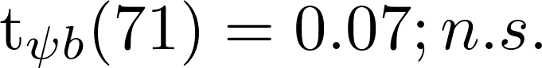

I spread a on b
I spread jam on toast
I spread socks on toast
yma = bnc * cnc
superman = batman * spiderman
distance = speed * mileage
distance = speed * time
221 Questionnaires
125 Finished
63 Excluded
72 Valid Records
| Condition | Example |
|---|---|
| Word | Customer |
| Abbreviation | cst |
| Letter | a, b, c, ... |
| Semantic | Syntactic | |||
| Type | Median | IQR | Median | IQR |
|---|---|---|---|---|
| Word | 01:24.48 | 01:12.78 | 00:39.43 | 00:49.00 |
| Abbreviation | 01:38.57 | 01:05.37 | 00:36.71 | 00:53.92 |
| Letter | 01:40.36 | 01:24.87 | 00:35.74 | 00:30.22 |
| Semantic | Syntactic | ||||
| Type | M | SD | M | SD | |
|---|---|---|---|---|---|
| Defects / min | Word | 0.78 | 0.42 | 1.76 | 1.13 |
| Abbreviation | 0.65 | 0.31 | 1.81 | 1.31 | |
| Letter | 0.66 | 0.39 | 1.96 | 1.39 | |
Linear Contrasts:

Replication Package:
http://github.com/empathic-code/peter
Further info:
http://brains-on-code.github.io/